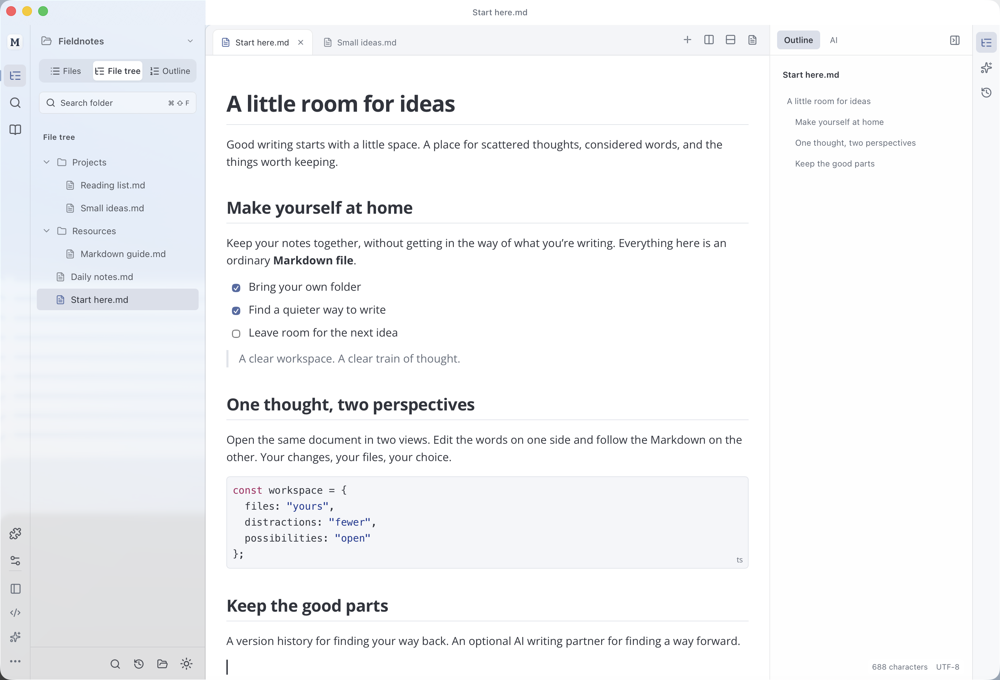

<!doctype html>
<html lang="en">
<meta charset="utf-8">
<meta name="viewport" content="width=device-width,initial-scale=1">
<title>Open Markdown Lane — A clearer writing workspace</title>
<style>
*{box-sizing:border-box}html,body{margin:0;width:1800px;height:1400px;overflow:hidden}body{font-family:"Avenir Next",Avenir,"Segoe UI",sans-serif;color:#30343d;background:#f3f5f9}.canvas{width:1800px;height:1400px;position:relative}.brand{position:absolute;top:39px;left:82px;display:flex;align-items:center;gap:12px;font-size:25px;font-weight:550;letter-spacing:-.6px}.brand img{width:37px;height:37px}.copy{position:absolute;top:103px;left:84px}.copy h1{font-size:46px;line-height:1.2;letter-spacing:-1.5px;font-weight:550;margin:0 0 13px}.copy p{font-size:21px;line-height:1.5;color:#626b7c;margin:0}.platform{position:absolute;right:84px;top:48px;font-size:18px;color:#626b7c}.window{position:absolute;top:236px;left:80px;width:1640px;border-radius:12px;overflow:hidden;border:1px solid #cdd3df;box-shadow:0 18px 50px #27385019}.window img{display:block;width:100%;height:auto}
</style>
<main class="canvas">
  <div class="brand">Open Markdown Lane</div>
  <div class="platform">macOS · Windows · Linux</div>
  <section class="copy"><h1>A clearer space for your words.</h1><p>Live Markdown. Local files. Optional AI.</p></section>
  <div class="window"></div>
</main>
</html>
